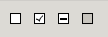
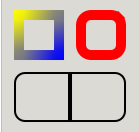

| Top |
Functions
Types and Values
| enum | GtkBorderStyle |
| GtkStyleContext | |
| enum | GtkStyleContextPrintFlags |
| struct | GtkBorder |
Description
GtkStyleContext is an object that stores styling information affecting a widget.
In order to construct the final style information, GtkStyleContext
queries information from all attached GtkStyleProviders. Style providers
can be either attached explicitly to the context through
gtk_style_context_add_provider(), or to the display through
gtk_style_context_add_provider_for_display(). The resulting style is a
combination of all providers’ information in priority order.
For GTK widgets, any GtkStyleContext returned by
gtk_widget_get_style_context() will already have a GdkDisplay and
RTL/LTR information set. The style context will also be updated
automatically if any of these settings change on the widget.
Style Classes
Widgets can add style classes to their context, which can be used to associate different styles by class. The documentation for individual widgets lists which style classes it uses itself, and which style classes may be added by applications to affect their appearance.
GTK defines macros for a number of style classes.
Custom styling in UI libraries and applications
If you are developing a library with custom GtkWidgets that
render differently than standard components, you may need to add a
GtkStyleProvider yourself with the GTK_STYLE_PROVIDER_PRIORITY_FALLBACK
priority, either a GtkCssProvider or a custom object implementing the
GtkStyleProvider interface. This way themes may still attempt
to style your UI elements in a different way if needed so.
If you are using custom styling on an applications, you probably want then
to make your style information prevail to the theme’s, so you must use
a GtkStyleProvider with the GTK_STYLE_PROVIDER_PRIORITY_APPLICATION
priority, keep in mind that the user settings in
XDG_CONFIG_HOME/gtk-4.0/gtk.css will
still take precedence over your changes, as it uses the
GTK_STYLE_PROVIDER_PRIORITY_USER priority.
Functions
gtk_style_context_add_provider ()
void gtk_style_context_add_provider (GtkStyleContext *context,GtkStyleProvider *provider,guint priority);
Adds a style provider to context
, to be used in style construction.
Note that a style provider added by this function only affects
the style of the widget to which context
belongs. If you want
to affect the style of all widgets, use
gtk_style_context_add_provider_for_display().
Note: If both priorities are the same, a GtkStyleProvider
added through this function takes precedence over another added
through gtk_style_context_add_provider_for_display().
Parameters
context |
||
provider |
||
priority |
the priority of the style provider. The lower
it is, the earlier it will be used in the style
construction. Typically this will be in the range
between |
gtk_style_context_add_provider_for_display ()
void gtk_style_context_add_provider_for_display (GdkDisplay *display,GtkStyleProvider *provider,guint priority);
Adds a global style provider to display
, which will be used
in style construction for all GtkStyleContexts under display
.
GTK uses this to make styling information from GtkSettings available.
Note: If both priorities are the same, A GtkStyleProvider
added through gtk_style_context_add_provider() takes precedence
over another added through this function.
Parameters
display |
||
provider |
||
priority |
the priority of the style provider. The lower
it is, the earlier it will be used in the style
construction. Typically this will be in the range
between |
gtk_style_context_get_display ()
GdkDisplay *
gtk_style_context_get_display (GtkStyleContext *context);
Returns the GdkDisplay to which context
is attached.
gtk_style_context_get_state ()
GtkStateFlags
gtk_style_context_get_state (GtkStyleContext *context);
Returns the state used for style matching.
This method should only be used to retrieve the GtkStateFlags
to pass to GtkStyleContext methods, like gtk_style_context_get_padding().
If you need to retrieve the current state of a GtkWidget, use
gtk_widget_get_state_flags().
gtk_style_context_get_color ()
void gtk_style_context_get_color (GtkStyleContext *context,GdkRGBA *color);
Gets the foreground color for a given state.
gtk_style_context_get_border ()
void gtk_style_context_get_border (GtkStyleContext *context,GtkBorder *border);
Gets the border for a given state as a GtkBorder.
gtk_style_context_get_padding ()
void gtk_style_context_get_padding (GtkStyleContext *context,GtkBorder *padding);
Gets the padding for a given state as a GtkBorder.
gtk_style_context_get_margin ()
void gtk_style_context_get_margin (GtkStyleContext *context,GtkBorder *margin);
Gets the margin for a given state as a GtkBorder.
gtk_style_context_lookup_color ()
gboolean gtk_style_context_lookup_color (GtkStyleContext *context,const char *color_name,GdkRGBA *color);
Looks up and resolves a color name in the context
color map.
gtk_style_context_remove_provider ()
void gtk_style_context_remove_provider (GtkStyleContext *context,GtkStyleProvider *provider);
Removes provider
from the style providers list in context
.
gtk_style_context_remove_provider_for_display ()
void gtk_style_context_remove_provider_for_display (GdkDisplay *display,GtkStyleProvider *provider);
Removes provider
from the global style providers list in display
.
gtk_style_context_restore ()
void
gtk_style_context_restore (GtkStyleContext *context);
Restores context
state to a previous stage.
See gtk_style_context_save().
gtk_style_context_save ()
void
gtk_style_context_save (GtkStyleContext *context);
Saves the context
state, so temporary modifications done through
gtk_style_context_add_class(), gtk_style_context_remove_class(),
gtk_style_context_set_state(), etc. can quickly be reverted
in one go through gtk_style_context_restore().
The matching call to gtk_style_context_restore() must be done
before GTK returns to the main loop.
gtk_style_context_add_class ()
void gtk_style_context_add_class (GtkStyleContext *context,const char *class_name);
Adds a style class to context
, so later uses of the
style context will make use of this new class for styling.
In the CSS file format, a GtkEntry defining a “search” class, would be matched by:
1 |
entry.search { ... } |
While any widget defining a “search” class would be matched by:
1 |
.search { ... } |
gtk_style_context_remove_class ()
void gtk_style_context_remove_class (GtkStyleContext *context,const char *class_name);
Removes class_name
from context
.
gtk_style_context_has_class ()
gboolean gtk_style_context_has_class (GtkStyleContext *context,const char *class_name);
Returns TRUE if context
currently has defined the
given class name.
gtk_style_context_set_display ()
void gtk_style_context_set_display (GtkStyleContext *context,GdkDisplay *display);
Attaches context
to the given display.
The display is used to add style information from “global” style providers, such as the display's GtkSettings instance.
If you are using a GtkStyleContext returned from
gtk_widget_get_style_context(), you do not need to
call this yourself.
gtk_style_context_set_state ()
void gtk_style_context_set_state (GtkStyleContext *context,GtkStateFlags flags);
Sets the state to be used for style matching.
gtk_style_context_set_scale ()
void gtk_style_context_set_scale (GtkStyleContext *context,int scale);
Sets the scale to use when getting image assets for the style.
gtk_style_context_get_scale ()
int
gtk_style_context_get_scale (GtkStyleContext *context);
Returns the scale used for assets.
gtk_style_context_to_string ()
char * gtk_style_context_to_string (GtkStyleContext *context,GtkStyleContextPrintFlags flags);
Converts the style context into a string representation.
The string representation always includes information about
the name, state, id, visibility and style classes of the CSS
node that is backing context
. Depending on the flags, more
information may be included.
This function is intended for testing and debugging of the CSS implementation in GTK. There are no guarantees about the format of the returned string, it may change.
gtk_border_new ()
GtkBorder *
gtk_border_new (void);
Allocates a new GtkBorder and initializes its elements to zero.
gtk_render_arrow ()
void gtk_render_arrow (GtkStyleContext *context,cairo_t *cr,double angle,double x,double y,double size);
Renders an arrow pointing to angle
.
Typical arrow rendering at 0, 1⁄2 π;, π; and 3⁄2 π:

Parameters
context |
||
cr |
a cairo_t |
|
angle |
arrow angle from 0 to 2 * |
|
x |
X origin of the render area |
|
y |
Y origin of the render area |
|
size |
square side for render area |
gtk_render_background ()
void gtk_render_background (GtkStyleContext *context,cairo_t *cr,double x,double y,double width,double height);
Renders the background of an element.
Typical background rendering, showing the effect of
background-image, border-width and border-radius:

Parameters
context |
||
cr |
a cairo_t |
|
x |
X origin of the rectangle |
|
y |
Y origin of the rectangle |
|
width |
rectangle width |
|
height |
rectangle height |
gtk_render_check ()
void gtk_render_check (GtkStyleContext *context,cairo_t *cr,double x,double y,double width,double height);
Renders a checkmark (as in a GtkCheckButton).
The GTK_STATE_FLAG_CHECKED state determines whether the check is
on or off, and GTK_STATE_FLAG_INCONSISTENT determines whether it
should be marked as undefined.
Typical checkmark rendering:

Parameters
context |
||
cr |
a cairo_t |
|
x |
X origin of the rectangle |
|
y |
Y origin of the rectangle |
|
width |
rectangle width |
|
height |
rectangle height |
gtk_render_expander ()
void gtk_render_expander (GtkStyleContext *context,cairo_t *cr,double x,double y,double width,double height);
Renders an expander (as used in GtkTreeView and GtkExpander) in the area
defined by x
, y
, width
, height
. The state GTK_STATE_FLAG_CHECKED
determines whether the expander is collapsed or expanded.
Typical expander rendering:

Parameters
context |
||
cr |
a cairo_t |
|
x |
X origin of the rectangle |
|
y |
Y origin of the rectangle |
|
width |
rectangle width |
|
height |
rectangle height |
gtk_render_focus ()
void gtk_render_focus (GtkStyleContext *context,cairo_t *cr,double x,double y,double width,double height);
Renders a focus indicator on the rectangle determined by x
, y
, width
, height
.
Typical focus rendering:

Parameters
context |
||
cr |
a cairo_t |
|
x |
X origin of the rectangle |
|
y |
Y origin of the rectangle |
|
width |
rectangle width |
|
height |
rectangle height |
gtk_render_frame ()
void gtk_render_frame (GtkStyleContext *context,cairo_t *cr,double x,double y,double width,double height);
Renders a frame around the rectangle defined by x
, y
, width
, height
.
Examples of frame rendering, showing the effect of border-image,
border-color, border-width, border-radius and junctions:

Parameters
context |
||
cr |
a cairo_t |
|
x |
X origin of the rectangle |
|
y |
Y origin of the rectangle |
|
width |
rectangle width |
|
height |
rectangle height |
gtk_render_handle ()
void gtk_render_handle (GtkStyleContext *context,cairo_t *cr,double x,double y,double width,double height);
Renders a handle (as in GtkPaned and
GtkWindow’s resize grip), in the rectangle
determined by x
, y
, width
, height
.
Handles rendered for the paned and grip classes:
Parameters
context |
||
cr |
a cairo_t |
|
x |
X origin of the rectangle |
|
y |
Y origin of the rectangle |
|
width |
rectangle width |
|
height |
rectangle height |
gtk_render_layout ()
void gtk_render_layout (GtkStyleContext *context,cairo_t *cr,double x,double y,PangoLayout *layout);
Renders layout
on the coordinates x
, y
gtk_render_line ()
void gtk_render_line (GtkStyleContext *context,cairo_t *cr,double x0,double y0,double x1,double y1);
Renders a line from (x0, y0) to (x1, y1).
Parameters
context |
||
cr |
a cairo_t |
|
x0 |
X coordinate for the origin of the line |
|
y0 |
Y coordinate for the origin of the line |
|
x1 |
X coordinate for the end of the line |
|
y1 |
Y coordinate for the end of the line |
gtk_render_option ()
void gtk_render_option (GtkStyleContext *context,cairo_t *cr,double x,double y,double width,double height);
Renders an option mark (as in a radio button), the GTK_STATE_FLAG_CHECKED
state will determine whether the option is on or off, and
GTK_STATE_FLAG_INCONSISTENT whether it should be marked as undefined.
Typical option mark rendering:

Parameters
context |
||
cr |
a cairo_t |
|
x |
X origin of the rectangle |
|
y |
Y origin of the rectangle |
|
width |
rectangle width |
|
height |
rectangle height |
gtk_render_activity ()
void gtk_render_activity (GtkStyleContext *context,cairo_t *cr,double x,double y,double width,double height);
Renders an activity indicator (such as in GtkSpinner).
The state GTK_STATE_FLAG_CHECKED determines whether there is
activity going on.
Parameters
context |
||
cr |
a cairo_t |
|
x |
X origin of the rectangle |
|
y |
Y origin of the rectangle |
|
width |
rectangle width |
|
height |
rectangle height |
gtk_render_icon ()
void gtk_render_icon (GtkStyleContext *context,cairo_t *cr,GdkTexture *texture,double x,double y);
Renders the icon in texture
at the specified x
and y
coordinates.
This function will render the icon in texture
at exactly its size,
regardless of scaling factors, which may not be appropriate when
drawing on displays with high pixel densities.
Parameters
context |
||
cr |
a cairo_t |
|
texture |
a GdkTexture containing the icon to draw |
|
x |
X position for the |
|
y |
Y position for the |
Types and Values
enum GtkBorderStyle
Describes how the border of a UI element should be rendered.
Members
|
No visible border |
||
|
Same as |
||
|
A single line segment |
||
|
Looks as if the content is sunken into the canvas |
||
|
Looks as if the content is coming out of the canvas |
||
|
A series of round dots |
||
|
A series of square-ended dashes |
||
|
Two parallel lines with some space between them |
||
|
Looks as if it were carved in the canvas |
||
|
Looks as if it were coming out of the canvas |
enum GtkStyleContextPrintFlags
Flags that modify the behavior of gtk_style_context_to_string().
New values may be added to this enumeration.
Property Details
The “display” property
“display” GdkDisplay *
The associated GdkDisplay.
Owner: GtkStyleContext
Flags: Read / Write